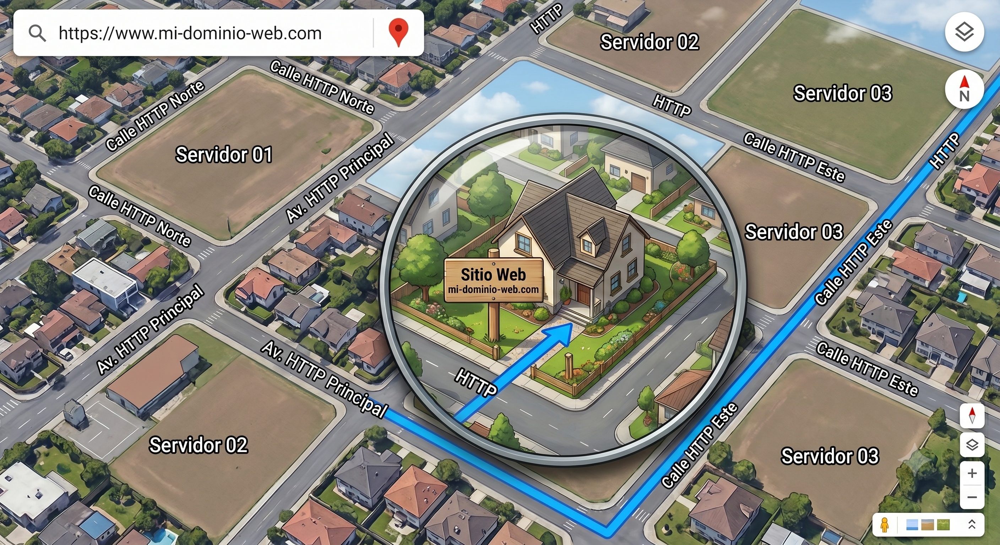

Formularios
En HTML, un formulario es una herramienta que permite recolectar datos. En HTML solo recolectamos los datos.
Qué necesito para trabajar con formularios?
- ¿Qué datos necesito? - HTML y qué etiquetas y atributos voy a utilizar
- ¿Qué quiero hacer con esos datos? - Lenguajes de Programación (PHP, JS, etc) y cómo voy a usar esos datos
Servidores (Hosting)
Un servidor es una "super computadora" que está diseñada para estar encendida las 24 horas del día, los 7 días de la semana, y utiliza una conexión a internet de altísima de velocidad.
Los servidores están pensados para almacenar archivos y entregarlos a cualquier cliente que se los pida en cualquier momento.

Git / GitHub
¿Qué es Git?
Git es un sistema de control de versiones distribuido y de código abierto, diseñado para manejar todo, desde proyectos pequeños hasta grandes con velocidad y eficiencia. Fue creado por Linus Torvalds en 2005 para desarrollar el kernel de Linux. Las principales características de Git incluyen:
- Ramas (branches) - Permiten trabajar en diferentes versiones de un proyecto simultáneamente.
- Commits - Guardan cambios en el repositorio, permitiendo rastrear y revertir cambios.
- Repositorio (repository) - Es el lugar donde se almacena el historial completo de cambios de un proyecto.
- Fusión (merge) - Combina diferentes ramas en una sola.
Un cambio para solicitar PR
¿Qué es GitHub?
GitHub (hosting de código) es una plataforma de desarrollo colaborativo que utiliza Git para el control de versiones. Además, ofrece herramientas para facilitar la colaboración entre desarrolladores, como:
- Repositorios remotos - Almacenan el código en la nube, accesible para múltiples usuarios.
- Issues y Pull Requests - Facilitan la colaboración y revisión de código.
- Integración Continua - Permite automatizar pruebas y despliegues.
- Comunidades y Equipos - Fomenta la colaboración entre desarrolladores a través de organizaciones y equipos.